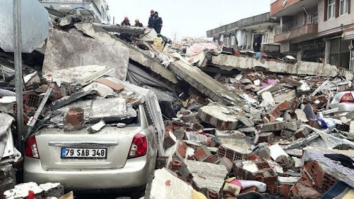
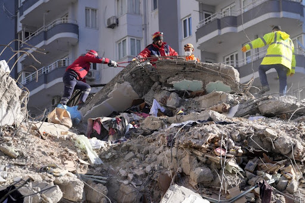

Febuary 19th, 2023
On February 6, 2023, a colossal 7.8 magnitude earthquake struck Turkey and Syria. Since the disaster, attention has shifted from immediate rescue efforts to the extensive challenges facing affected communities. With a staggering death toll of 47,000, countless missing, and millions displaced, the earthquakes swiftly reduced entire cities to rubble. Weeks later, as the full extent of the devastation continues to unfold, urgent relief efforts are underway, accompanied by crucial considerations for long-term reconstruction.
The earthquake, centered near the city of Kahramanmaras, resulted in over 50,000 casualties and caused widespread devastation across both Turkey and Syria. The earthquake revealed the urgent need for clean water, medical care, and shelter for the affected population, especially those vulnerable to the climate-related and seismic risks.

Buildings and streets devastated by cataclysmic earthquake
Beyond the human toll, the earthquake triggered environmental challenges, damaging water and sanitation infrastructure, thus heightening the risk of waterborne diseases. Organizations like the World Health Organization (WHO) and the United Nations have rallied to provide aid such as tetanus shots and cholera tests in order to address immediate health concerns. However, the shortage of temporary water sources and sanitary facilities poses ongoing challenges. Additionally, the repair of critical infrastructure remains a looming problem.
Since the disaster, the international community has swiftly mobilized to assist Turkey and Syria in their recovery efforts. The World Bank pledged $1.78 billion in assistance, while development banks are expected to offer additional funding and loans for reconstruction. The United Nations stressed the importance of long-term resilience efforts, recognizing that disasters erode sustainable development gains. Yet, concerns linger about the potential impact on developing countries, particularly in Africa, where climate impacts already cost upwards of 15% of annual GDP growth per capita.
As Turkey faces the monumental task of rebuilding, the earthquake's aftermath highlights the critical need for a more resilient approach to construction. Sustainable building practices, incorporating climate resiliency, are essential for withstanding future seismic events and climate-related challenges. The battle to combat the perception that sustainable reconstruction is significantly costlier and time-consuming is ongoing, but organizations like the World Green Building Council emphasize the long-term benefits of such investments.
The earthquake's occurrence in one of the most earthquake-prone regions of the world raises concerns about Turkey's outdated building methods. The U.N. Intergovernmental Panel on Climate Change (IPCC) warns of rising temperatures, heatwaves, and other climate impacts. This means that a reconstruction approach that considers both seismic and climate risks is of utmost importance. Experts urge Turkey to seize this opportunity to rebuild with climate resilience in mind.

Considering the elevated earthquake risk in our progressively urbanized world and the impending threats of climate-related hazards and extreme weather events, it is imperative to advocate for enhanced integration of disaster risk reduction initiatives and comprehensive climate change policies, planning, and actions. As the affected regions grapple with the aftermath, the focus must shift towards building back better, incorporating resilient infrastructure, and focusing on sustainable approaches for the future.